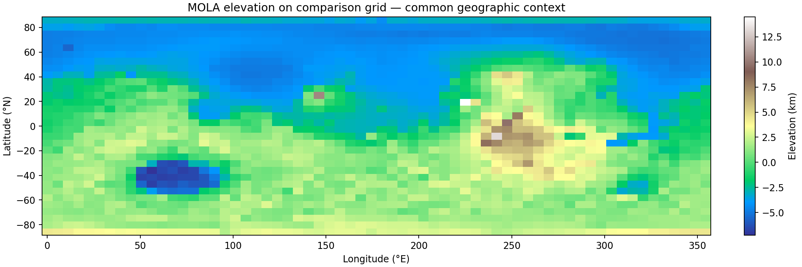
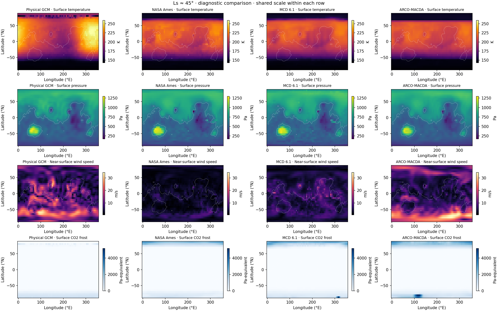
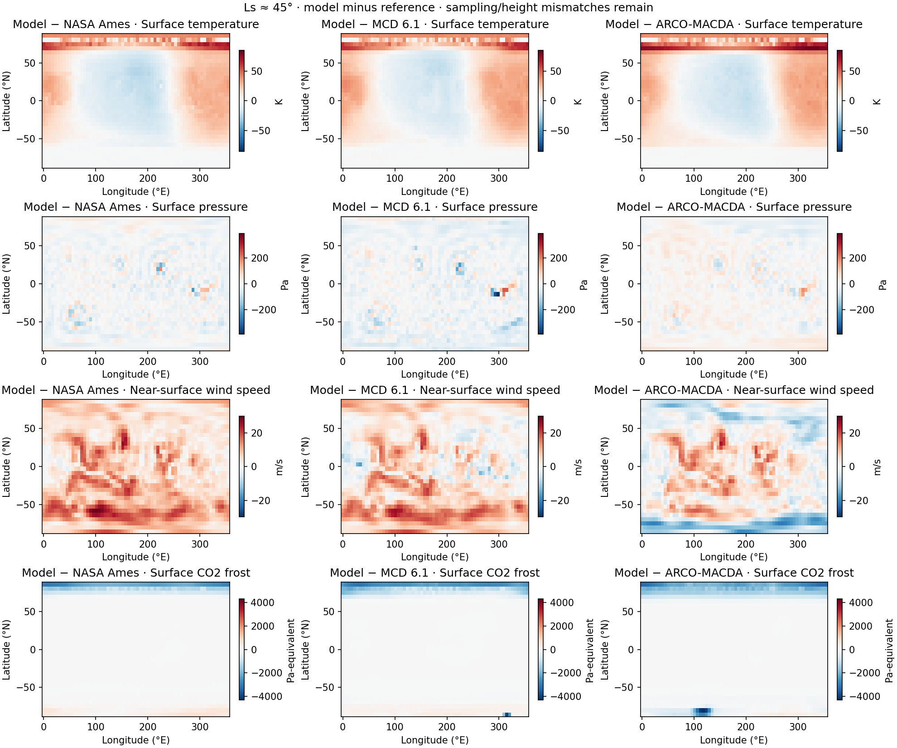
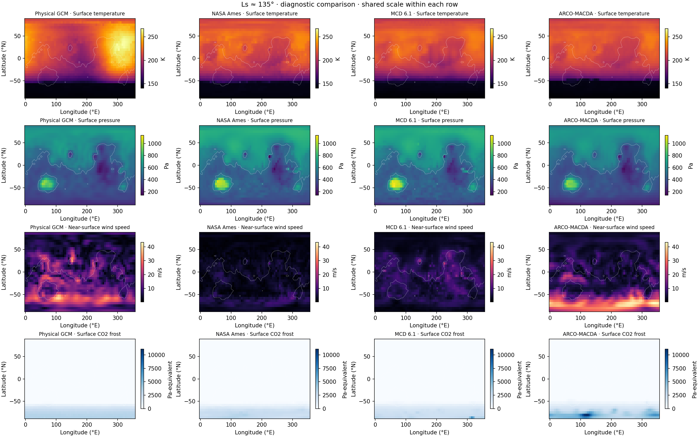
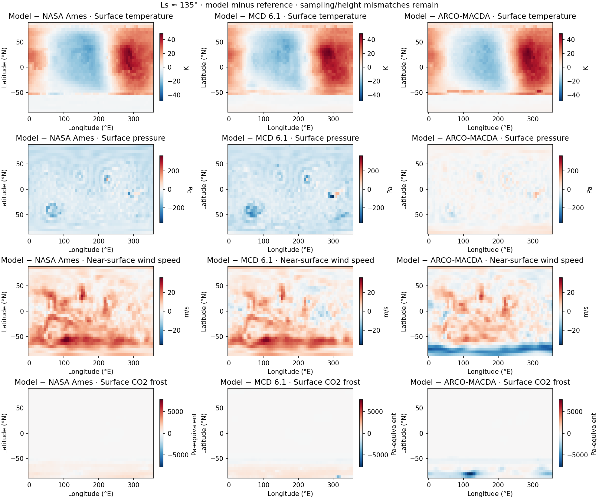
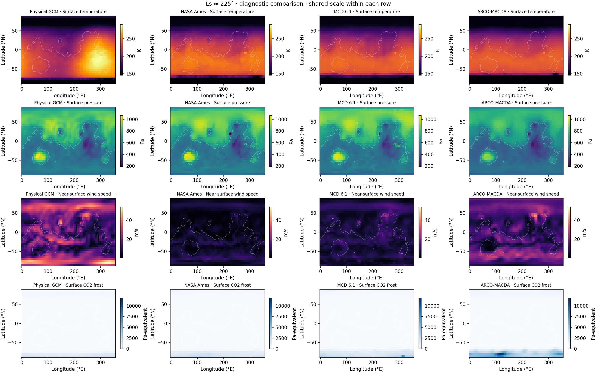
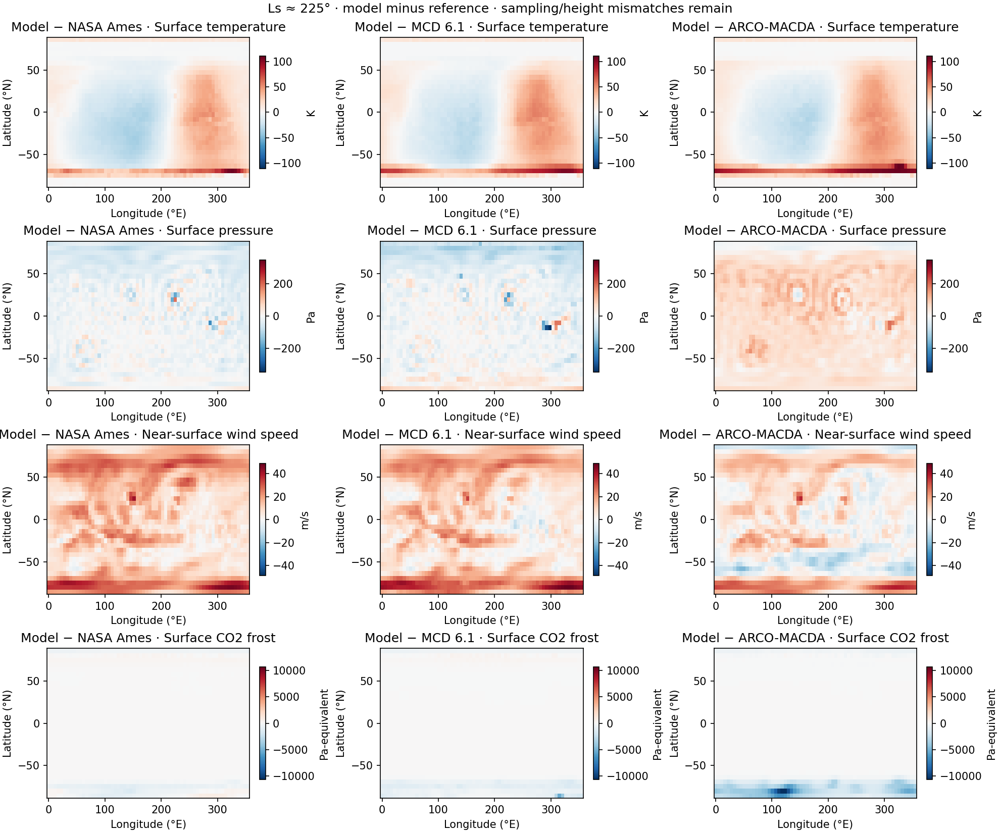
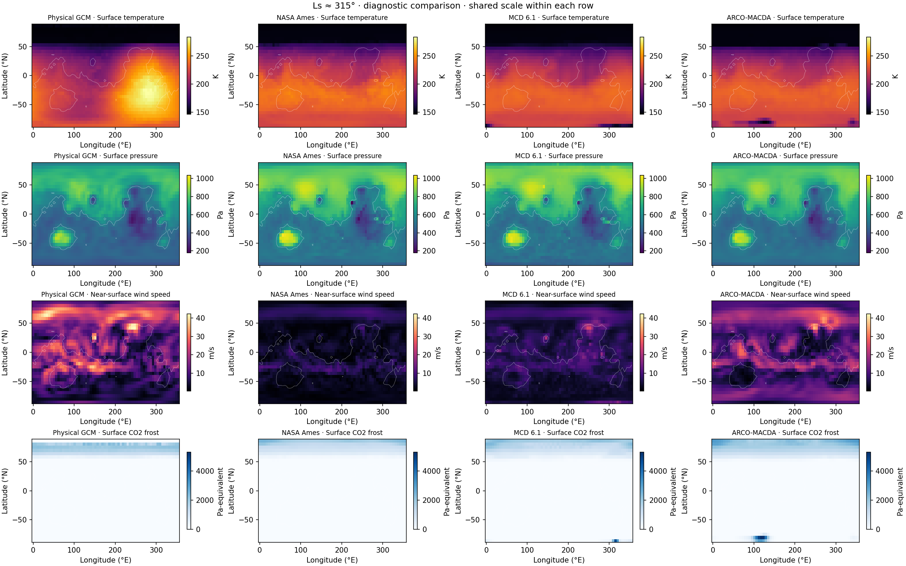
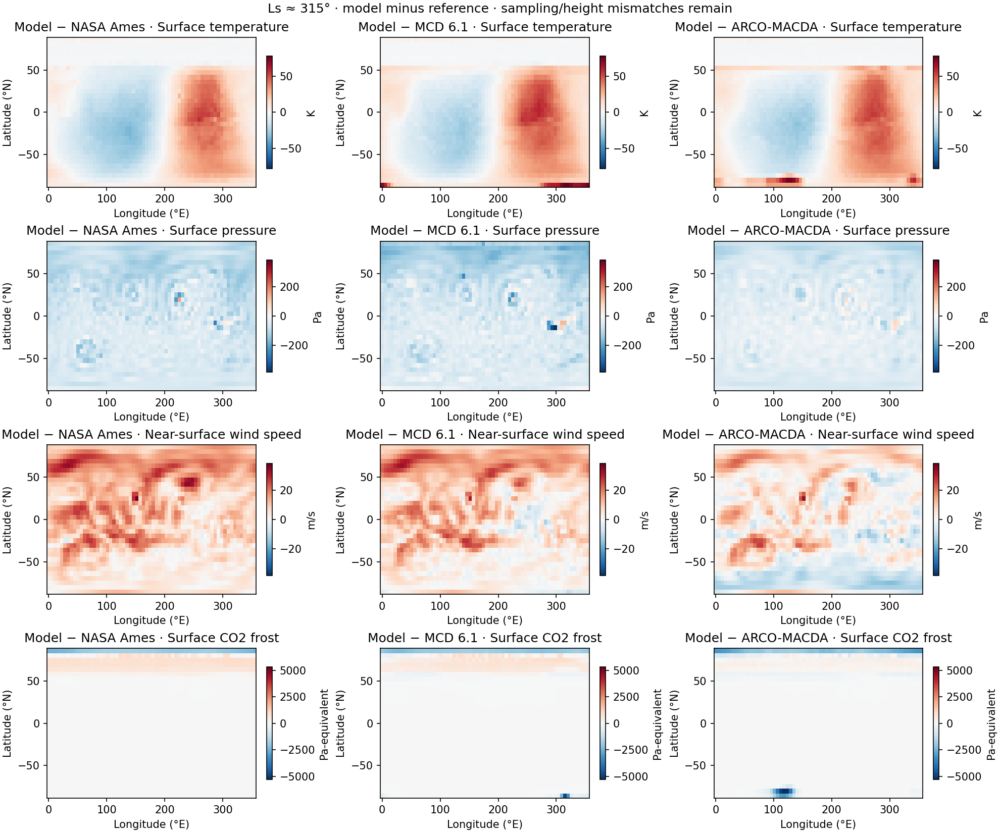

Physical baseline diagnostic. No calibrated or equilibrium improvement is implied.
| source | role | sampling | wind level | dust | CO2 LW scale | dust LW scale | exchange scale |
|---|---|---|---|---|---|---|---|
| Physical GCM | deterministic physical baseline | mean of 4 instantaneous checkpoints within ±5° Ls | lowest model sigma layer | prescribed Ames seasonal visible/IR opacity | 0.25 | 0.25 | 1 |
| NASA Ames | Ames FV3 model reference | duration-weighted five-sol means within ±5° Ls | lowest archived layer | Ames FV3 reference simulation | not comparable / not supplied | not comparable / not supplied | not comparable / not supplied |
| MCD 6.1 | model-derived climatology | mean of LT 0, 6, 12, 18 h at nearby Ls | 10 m above surface for wind | scenario 1 requested; legacy cache verification limited | not comparable / not supplied | not comparable / not supplied | not comparable / not supplied |
| ARCO-MACDA | MY34–35 reanalysis | daily means from MY34–35 within ±5° Ls | lowest regridded sigma layer | assimilated-year MACDA dust; not matched to Ames | not comparable / not supplied | not comparable / not supplied | not comparable / not supplied |
Parameter scales are framework-specific; reference values are not inferred.



| Ls | reference | field | units | model_mean | reference_mean | bias | mae | rmse | correlation |
|---|---|---|---|---|---|---|---|---|---|
| 45 | NASA Ames | Surface temperature | K | 204.1 | 199.4 | 4.737 | 14.86 | 18.36 | 0.7933 |
| 45 | MCD 6.1 | Surface temperature | K | 204.1 | 196.3 | 7.852 | 14.94 | 19.12 | 0.8016 |
| 45 | ARCO-MACDA | Surface temperature | K | 204.1 | 196.3 | 7.816 | 16.06 | 20.75 | 0.7535 |
| 45 | NASA Ames | Surface pressure | Pa | 640.2 | 650.7 | -10.55 | 20.54 | 29.44 | 0.9873 |
| 45 | MCD 6.1 | Surface pressure | Pa | 640.2 | 655.4 | -15.2 | 24.81 | 37.63 | 0.98 |
| 45 | ARCO-MACDA | Surface pressure | Pa | 640.2 | 636.8 | 3.407 | 18.24 | 25.18 | 0.9894 |
| 45 | NASA Ames | Near-surface wind speed | m/s | 10.31 | 2.788 | 7.526 | 7.602 | 9.419 | 0.4317 |
| 45 | MCD 6.1 | Near-surface wind speed | m/s | 10.31 | 5.599 | 4.715 | 5.843 | 7.731 | 0.2009 |
| 45 | ARCO-MACDA | Near-surface wind speed | m/s | 10.31 | 8.104 | 2.21 | 5.259 | 6.907 | 0.4045 |
| 45 | NASA Ames | Surface CO2 frost | Pa-equivalent | 29.49 | 52.77 | -23.28 | 33.34 | 201.5 | 0.5338 |
| 45 | MCD 6.1 | Surface CO2 frost | Pa-equivalent | 29.49 | 63.14 | -33.65 | 41.68 | 232.1 | 0.5135 |
| 45 | ARCO-MACDA | Surface CO2 frost | Pa-equivalent | 29.49 | 95.78 | -66.29 | 67.37 | 311.8 | 0.5766 |


| Ls | reference | field | units | model_mean | reference_mean | bias | mae | rmse | correlation |
|---|---|---|---|---|---|---|---|---|---|
| 135 | NASA Ames | Surface temperature | K | 207.7 | 203.4 | 4.274 | 15.51 | 18.82 | 0.8183 |
| 135 | MCD 6.1 | Surface temperature | K | 207.7 | 201.9 | 5.765 | 15.4 | 19.07 | 0.8213 |
| 135 | ARCO-MACDA | Surface temperature | K | 207.7 | 201 | 6.66 | 15.71 | 19.6 | 0.8159 |
| 135 | NASA Ames | Surface pressure | Pa | 482.8 | 544 | -61.19 | 61.71 | 66.7 | 0.9869 |
| 135 | MCD 6.1 | Surface pressure | Pa | 482.8 | 548.7 | -65.95 | 66.72 | 73.41 | 0.9766 |
| 135 | ARCO-MACDA | Surface pressure | Pa | 482.8 | 486.2 | -3.432 | 13.68 | 19.33 | 0.9891 |
| 135 | NASA Ames | Near-surface wind speed | m/s | 11.38 | 2.985 | 8.397 | 8.471 | 10.56 | 0.456 |
| 135 | MCD 6.1 | Near-surface wind speed | m/s | 11.38 | 5.929 | 5.453 | 6.534 | 8.797 | 0.2238 |
| 135 | ARCO-MACDA | Near-surface wind speed | m/s | 11.38 | 8.641 | 2.742 | 5.741 | 7.726 | 0.5056 |
| 135 | NASA Ames | Surface CO2 frost | Pa-equivalent | 186.9 | 159.1 | 27.82 | 33.74 | 123 | 0.9944 |
| 135 | MCD 6.1 | Surface CO2 frost | Pa-equivalent | 186.9 | 161.5 | 25.32 | 46.12 | 164 | 0.9869 |
| 135 | ARCO-MACDA | Surface CO2 frost | Pa-equivalent | 186.9 | 244.9 | -58.02 | 67.67 | 322.6 | 0.9451 |


| Ls | reference | field | units | model_mean | reference_mean | bias | mae | rmse | correlation |
|---|---|---|---|---|---|---|---|---|---|
| 225 | NASA Ames | Surface temperature | K | 218.7 | 216.4 | 2.355 | 19.13 | 23.49 | 0.7638 |
| 225 | MCD 6.1 | Surface temperature | K | 218.7 | 211.3 | 7.446 | 19.74 | 25.04 | 0.7487 |
| 225 | ARCO-MACDA | Surface temperature | K | 218.7 | 210.5 | 8.219 | 20 | 26.09 | 0.7321 |
| 225 | NASA Ames | Surface pressure | Pa | 637.4 | 655.9 | -18.47 | 25.5 | 33.51 | 0.9849 |
| 225 | MCD 6.1 | Surface pressure | Pa | 637.4 | 653.4 | -15.91 | 26.98 | 38.89 | 0.9754 |
| 225 | ARCO-MACDA | Surface pressure | Pa | 637.4 | 577.6 | 59.8 | 60.5 | 66.39 | 0.9852 |
| 225 | NASA Ames | Near-surface wind speed | m/s | 16.62 | 4.233 | 12.39 | 12.45 | 14.78 | 0.3876 |
| 225 | MCD 6.1 | Near-surface wind speed | m/s | 16.62 | 7.039 | 9.582 | 10.15 | 12.79 | 0.225 |
| 225 | ARCO-MACDA | Near-surface wind speed | m/s | 16.62 | 12.43 | 4.196 | 7.228 | 9.329 | 0.3945 |
| 225 | NASA Ames | Surface CO2 frost | Pa-equivalent | 32.23 | 46.91 | -14.69 | 28.49 | 132.9 | 0.8614 |
| 225 | MCD 6.1 | Surface CO2 frost | Pa-equivalent | 32.23 | 66.31 | -34.09 | 43.82 | 194.9 | 0.8406 |
| 225 | ARCO-MACDA | Surface CO2 frost | Pa-equivalent | 32.23 | 154.5 | -122.3 | 122.6 | 631.3 | 0.783 |


| Ls | reference | field | units | model_mean | reference_mean | bias | mae | rmse | correlation |
|---|---|---|---|---|---|---|---|---|---|
| 315 | NASA Ames | Surface temperature | K | 216.6 | 214.1 | 2.488 | 17.53 | 21.89 | 0.7802 |
| 315 | MCD 6.1 | Surface temperature | K | 216.6 | 209.1 | 7.434 | 18.03 | 23.1 | 0.7771 |
| 315 | ARCO-MACDA | Surface temperature | K | 216.6 | 209.6 | 6.98 | 17.9 | 22.64 | 0.7847 |
| 315 | NASA Ames | Surface pressure | Pa | 562.1 | 635.6 | -73.47 | 73.91 | 79.82 | 0.9863 |
| 315 | MCD 6.1 | Surface pressure | Pa | 562.1 | 631.3 | -69.2 | 70.05 | 78.8 | 0.9779 |
| 315 | ARCO-MACDA | Surface pressure | Pa | 562.1 | 608.1 | -46.05 | 46.89 | 51.96 | 0.9881 |
| 315 | NASA Ames | Near-surface wind speed | m/s | 14.4 | 3.712 | 10.68 | 10.77 | 12.89 | 0.4923 |
| 315 | MCD 6.1 | Near-surface wind speed | m/s | 14.4 | 6.521 | 7.875 | 8.511 | 10.79 | 0.4021 |
| 315 | ARCO-MACDA | Near-surface wind speed | m/s | 14.4 | 11.95 | 2.45 | 5.793 | 7.562 | 0.5126 |
| 315 | NASA Ames | Surface CO2 frost | Pa-equivalent | 107.6 | 68.18 | 39.4 | 53.85 | 216.5 | 0.8735 |
| 315 | MCD 6.1 | Surface CO2 frost | Pa-equivalent | 107.6 | 87.94 | 19.64 | 46.79 | 194.1 | 0.883 |
| 315 | ARCO-MACDA | Surface CO2 frost | Pa-equivalent | 107.6 | 123.2 | -15.58 | 35.98 | 207.6 | 0.8755 |